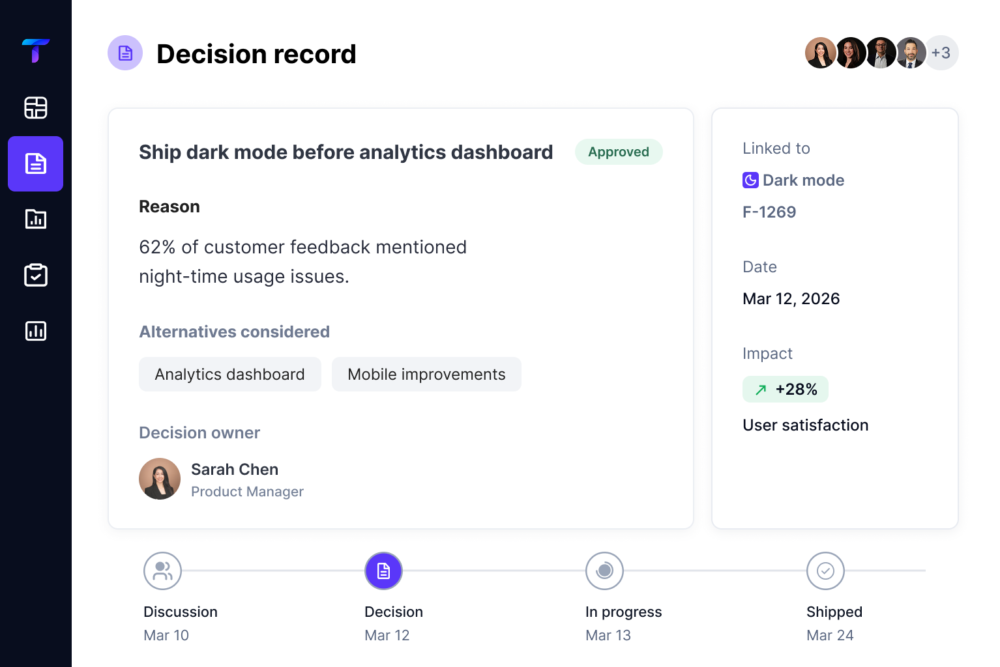

Your team's best decisions shouldn't disappear.
TeamFlow preserves the context behind decisions so your team stays aligned, moves faster, and builds with confidence.


The Problem
The context behind
your work is disappearing.
Important decisions live in conversations, docs, and tools.
Months later, nobody can find the why.
Let's ship dark mode first. Users keep asking for it.

Agree, it's blocking retention.
Repeated discussions
Teams revisit decisions because nobody remembers why they were made.
- Customer interviews
- Feedback themes
Slow onboarding
New hires spend weeks digging through old docs and threads to understand the why.
All their context and decisions left with them.
Knowledge loss
Critical understanding leaves when employees leave the company.
The hidden cost of lost context
30%
of time spent searching
for information
2+ hrs
per person, per week
wasted
Millions
lost annually in slow
decisions and rework
The Impact
Lost context isn’t
just frustrating.
It’s expensive.
We analyzed thousands of teams to uncover the real cost of disconnected decisions and missing context.
13+
hours
per team spent searching, recreating context, and aligning on decisions.
$2.3M
per year
average annual loss for a 100-person product team from duplicated discussions, slow decisions, and context switching.
Teams using TeamFlow recover up to
35% more time and ship 2x faster.


Join 2,000+ product teams building with TeamFlow
Source: TeamFlow State of Product Teams Report 2024
The Shift
Most tools track work.
TeamFlow tracks the thinking.
Work happens in many places.
Context gets lost between them.
Outcome
Scattered. Disconnected. Slow.
Capture Ideas
From anywhere, in the moment.
AI Connects the Dots
Brings context together automatically.
Everything in One Place
Organized, searchable, always up to date.
Outcome
Connected. Clear. Fast.
BUILT FOR HOW TEAMS WORK
See the thinking
behind every decision.


Decisions Workspace
See the direct lineage of product approvals, key participants, statuses, and complete operational reasoning inside a beautiful structured list.
Teams save hours.
Every week.
See how product teams use TeamFlow to preserve context and make better decisions, faster.
For the first time, our product decisions have a permanent home. New teammates get up to speed in minutes, not weeks.

Emma Rodriguez
Head of Product, NovaLabs
We cut decision follow-up time by 50%. No more digging through Slack, docs, or old meetings to find the why.

Marcus Lee
Co-founder, Elevate
TeamFlow gives us clarity. Our roadmap discussions are more focused, and every decision is backed by real evidence.

Aisha Patel
VP of Product, Looply
Works with the tools
you already use.
TeamFlow doesn't replace your workflow.
It preserves the decisions behind it.
Don't see your tool? We're adding new integrations every week.
Preserve the context behind every decision.
Your work already has a history. Make sure your team can understand it.